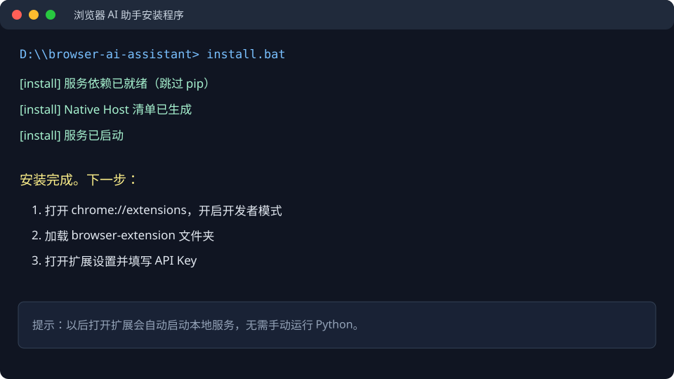
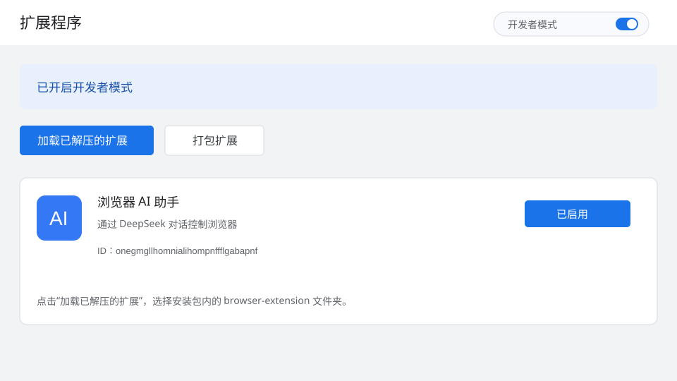
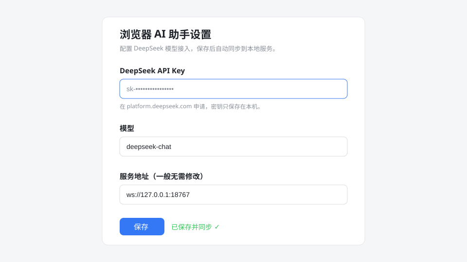
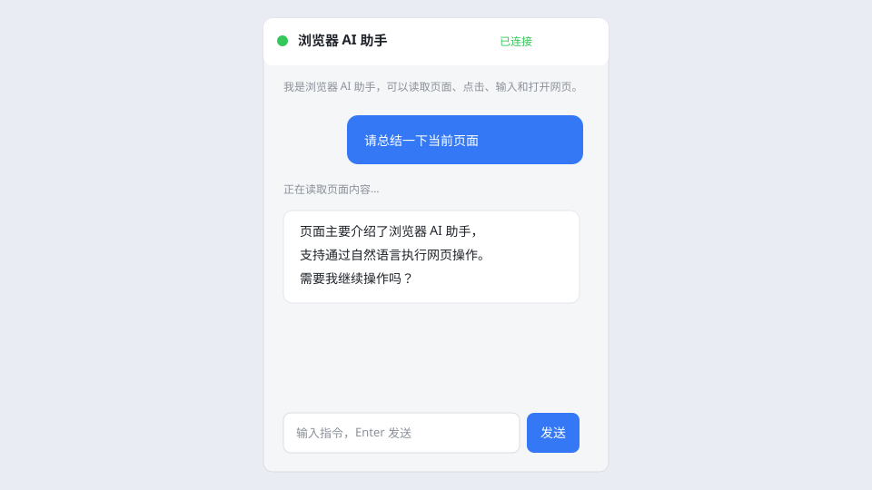

浏览器 AI 助手
给浏览器装上一个会“看页面、点按钮、填表单、打开网页”的 AI 助手。照着下面的图文步骤操作，不需要学习 Python，也不需要配置环境变量。
支持 Windows 与 macOS + Chrome / Edge一、安装前准备
- Windows 10/11 或 macOS，已安装最新版 Chrome 或 Edge。
- 一份项目正式发布包（里面应看到
runtime文件夹）。 - 一个 DeepSeek API Key。没有密钥时可以先完成安装，但无法进行 AI 对话。
macOS 用户专用步骤
macOS 没有 Windows 的注册表，安装脚本会把 Native Messaging 清单写入当前用户目录。请按下面方式运行：
- 解压发布包，在 Finder 中打开项目文件夹。
- 右键
install.command，选择“打开”。若系统提示无法验证，请打开“系统设置 → 隐私与安全性”选择“仍要打开”。 - 如果双击没有反应，打开“终端”，把项目文件夹拖进终端后输入：
bash install.command。 - 安装完成后，在 Chrome 打开
chrome://extensions，或在 Edge 打开edge://extensions，完成“加载已解压的扩展”。
runtime/bin/python3。如果你拿到的是源代码包，需要先安装 Python 3.10+，然后在项目目录运行 python3 scripts/install.py。二、安装本地服务（只需一次）
解压到普通文件夹
例如 D:\browser-ai-assistant。路径中尽量不要使用特殊符号或网盘同步目录。
双击 install.bat
看到黑色窗口时不要关闭，等待出现“安装完成”。脚本会自动注册浏览器连接所需的 Native Messaging，并启动本地服务。

install.bat 即可更新路径。通常不需要卸载旧版本。三、在 Chrome / Edge 加载扩展
打开扩展管理页
Chrome 地址栏输入 chrome://extensions；Edge 输入 edge://extensions。
打开右上角开发者模式，点击加载已解压的扩展，选择发布包里的 browser-extension 文件夹（不要选它里面的文件）。

固定扩展（推荐）
加载成功后，点击浏览器工具栏的拼图图标，把“浏览器 AI 助手”固定到工具栏。以后点击蓝色 AI 图标会直接在浏览器右侧打开侧边栏，不会遮挡当前网页。
四、配置 API Key
打开设置页
点击扩展图标右上角的齿轮按钮；或者在扩展管理页找到本扩展，点击“详细信息 → 扩展程序选项”。

每一项怎么填？
| 项目 | 填写内容 | 小白提示 |
|---|---|---|
| DeepSeek API Key | 以 sk- 开头的密钥 | 在 DeepSeek 控制台创建；不要发给别人。 |
| 模型 | deepseek-chat | 保持默认即可，想使用推理模型时再改。 |
| 服务地址 | ws://127.0.0.1:18767 | 这是本机地址，不要改成网页地址。 |
看到“已保存并同步 ✓”就代表配置完成。
service/config.local.json 打包或上传。五、第一次使用
打开一个普通网页
先打开新闻、商品页或文档页。Chrome 的新标签页、扩展管理页、银行等受保护页面可能不允许脚本执行。
点击 AI 图标并提问
第一次打开时，状态灯会从“连接中”变成“已连接”。用自然语言告诉它要做什么，例如：
- “总结一下当前页面，列出 3 个重点。”
- “找出页面上所有商品名称和价格。”
- “滚动到底部，点击‘下一页’。”
- “打开百度并搜索浏览器自动化。”

六、历史记录与新对话
侧边栏会自动保存每次对话。关闭侧边栏或重启浏览器后，再次点击扩展图标会回到上一次打开的对话。
- 点击顶部“历史对话”下拉框，可切换以前的会话。
- 点击“＋ 新对话”，才会创建一个全新的会话。
- 新对话会以你发送的第一句话自动命名，最多保留最近 50 个会话。
七、Agent、长期记忆与本地文件
让 Agent 记住信息
直接说“请记住：我喜欢 CSV 格式，默认使用简体中文”。只有明确说“记住”时才会写入长期记忆。记忆保存在项目目录的 service/data/agent_memory.json，不会上传到云端。
从当前对话生成 Skill
当一套操作验证成功后，说“把刚才的操作经验总结成一个 Skill，命名为 xxx，并保存到本地”。Agent 会调用 create_skill，生成 skills/xxx/SKILL.md。下一次遇到相似任务，Agent 会从可用 Skill 清单中选择并先读取它。
调用 Skill
也可以把自定义工作流放入 skills/你的技能名/SKILL.md，然后告诉 Agent“列出可用 Skill”或“读取 xxx Skill 并按它执行”。
保存生成文件
直接说“把刚才的数据保存为 products.csv”或“生成 Markdown 报告并保存”。文件会写入项目目录下的 outputs/，可在资源管理器中直接打开。
service/data/agent_memory.json、service/config.local.json、skills/ 或 outputs/ 一起打包。八、常见问题
双击 install.bat 后窗口闪一下就关闭
请确认使用的是最新版安装脚本。新版批处理会在成功或失败后停留在“Press any key to continue”。如果旧压缩包仍有问题，请下载最新版；也可以在项目文件夹地址栏输入 cmd 后回车，再运行 install.bat 查看完整错误。
状态一直是“未连接”怎么办？
先关闭聊天窗口，双击一次 install.bat，再在扩展管理页点击刷新按钮。仍未连接时，检查项目目录下的 logs/server.log 和 logs/native-host.log 是否有报错。
提示 API Key 无效或未配置
回到扩展设置页，确认密钥完整复制，没有多余空格；模型保持 deepseek-chat。API Key 需要在 DeepSeek 控制台有可用余额/权限。
点击页面按钮没有反应
切换到普通网页标签页后再试。Chrome 内置页面（地址以 chrome:// 开头）和部分安全页面禁止扩展注入脚本，这是浏览器限制。
复杂表格任务提示操作轮次过多
新版会为 execute_script 保留最多 12000 字符结果，并在达到工具上限时自动根据现有数据总结。仍需更多步骤时，可以在 service/config.json 调整 max_tool_rounds（建议 16～24，最高 40），然后重新运行安装脚本。
我把文件夹移动了，是否需要重新安装？
不需要卸载。把整个文件夹移动到新位置后，再双击一次 install.bat，它会更新 Native Messaging 路径。
macOS 提示“无法验证开发者”怎么办？
右键 install.command 选择“打开”；仍被阻止时，到“系统设置 → 隐私与安全性”，在底部点击“仍要打开”。也可以直接打开终端，在项目目录执行 bash install.command。
macOS 安装后仍显示未连接怎么办？
完全退出并重新打开 Chrome/Edge，再点击扩展管理页的刷新按钮。检查 ~/Library/Application Support/Google/Chrome/NativeMessagingHosts/com.browser.assistant.json（Edge 对应 Microsoft Edge 目录）是否存在；然后重新运行 bash install.command。
如何停止本地服务？
关闭浏览器后服务通常会保持后台运行。需要停止时，可在任务管理器结束“Python/浏览器 AI 助手服务”进程；下次打开扩展会自动重新启动。
八、卸载方式
- 在 Chrome/Edge 扩展管理页点击“移除”。
- 删除解压出来的项目文件夹即可。
- Windows 的 Native Messaging 注册项和 macOS 的清单文件可以保留，不会影响其他浏览器；想彻底清理时，重新运行安装脚本前手动删除对应的
NativeMessagingHosts/com.browser.assistant.json即可。